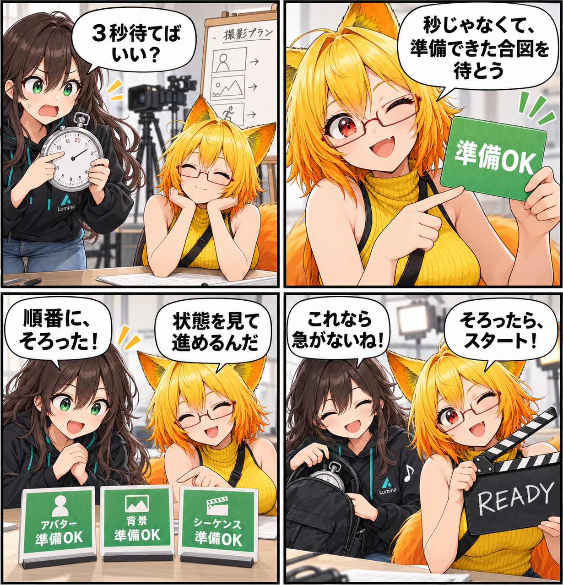

秒を数えず、準備がそろったら始める。AIディレクターの段取りを整えた日
AIが撮影を進めるとき、「3秒待つ」より「準備ができたら次へ」が確かです。VRAS MCPに、アバター・背景・シーケンスなどの状態を待つ入口と、撮影の段取りを組み立てるための観測・操作を加えました。

待つ相手は、時計ではなく状態
アバターや背景を読み込んだ直後、あるいはシーケンスや録画の準備中には、処理に必要な時間が毎回同じとは限りません。固定の秒数を置けば一見単純ですが、早すぎれば次の操作が受け付けられず、余裕を多く取りすぎれば待ち時間が積み重なります。
今回の拡張では、AIエージェントが固定のsleepを使う代わりに、wait.until と operation.get_status でRuntimeの状態を待てるようにしました。avatar.ready、background.ready、sequence.prepared、sequence.ended、recording.stopped、scene.stable といった条件を、次の操作へ進む合図として扱います。
まず今のスタジオを見て、まとめて段取りを渡す
scene.inspect は、Runtimeの状態、アバターと背景、Photo Camera、管理対象ライト、エフェクト、VAS再生、Runtime動画、描画・サブシステムの診断を一度に観測する入口です。AIが内部の任意GameObjectやComponentを直接扱うのではなく、VRASが用意した範囲の情報から次の作業を判断します。
複数の独立した設定を順に送るために、batch.execute も追加しました。登録済みのVRAS操作を1〜32件順番に送れます。ただし、これはロールバック付きのトランザクションではありません。完了を待つ必要がある操作は、バッチを分けて状態待機を挟む設計です。
撮影・ポーズ・シーケンスを、同じ段取りで扱う
カメラには、複数アバターをまとめて収める camera.frame_group、構図を確かめる camera.get_frame_analysis や shot.evaluate などの入口があります。ポーズでは左右反転、IKターゲット、重心移動、視線、背骨曲線などの高水準操作を組み合わせます。
VASシーケンス側では、ドキュメント・トラック・キーの取得に加え、キーの追加・移動・削除・イージング設定、範囲の複製・時間スケール、検証、準備・再生・停止・録画という流れを扱えるようにしました。カメラを毎フレームMCPで動かすのではなく、生成した経路やキー列をシーケンスへ入れて再生する前提です。
技術的なポイント
vras.get_capabilitiesとtools/listで利用可能な操作を確認し、scene.inspectで現在のスタジオ状態を観測します。- 非同期の準備・終了は
wait.untilとoperation.get_statusで追います。固定秒数は成功の根拠にしません。 batch.executeは登録済み操作だけを対象にし、再帰実行や自動待機、ロールバックは行いません。- VASはキーと範囲の編集、検証、準備・再生・録画を分け、依存する完了は状態として確認します。
- MCPはlocalhostに限定し、任意ファイルパス、任意Unity Object／Component／field、HMDカメラTransformを公開しない安全境界を保ちます。
ほかにも進んだこと・補足
同じ期間には、VABの一括更新自動化の拡張と、AI画像ポーズ用モデルをビルド入力・ローカル資産として扱う整理も入りました。この記事の主題は、最も変更規模が大きく、読者に一つの流れとして伝えやすいAIディレクター向けの段取りです。
この記事は集計終了時点のコミット済みソースとコマンドリファレンスに基づきます。日記制作中にUnityの実行、実機確認、動画撮影、性能計測は行っていません。未コミットのシーン・撮影処理などは今回の成果に含めません。
4コマの裏話
今回は、急ぐルミナがストップウォッチで「3秒待つ」つもりになるところから始めました。ろひが「準備OK」の札を出し、アバター・背景・シーケンスの合図がそろってからカチンコを鳴らします。直近回の構図相談や保存先の発見とは違い、便利だった小道具をしまうことで「時計ではなく状態を待つ」意味を伝える寸劇です。会話と札は説明のための創作で、実際の操作画面や実行記録ではありません。
まとめ
AIに撮影の段取りを任せるには、操作の数だけでなく、いつ次へ進めるかを確かめる手段が要ります。VRAS MCPは観測、状態待機、バッチ、撮影・ポーズ・シーケンスの高水準操作を分け、準備がそろったことを確かめながら進める土台を広げました。
本日のひとこと
急がなくていい。合図がそろってから、始めよう。